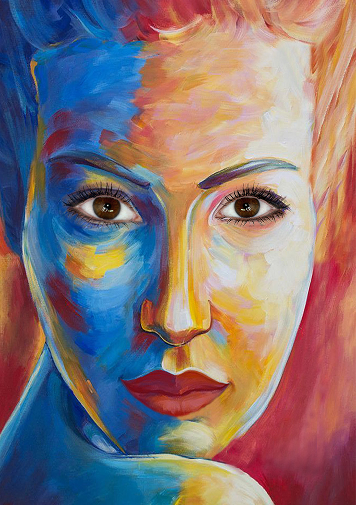
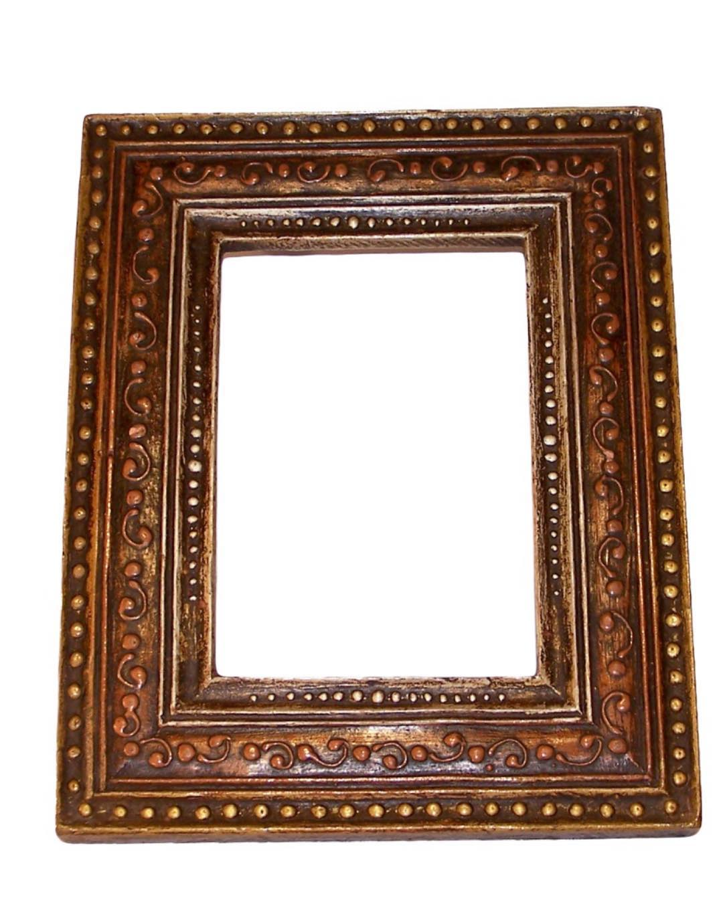

E-Book: פרידה קאלו
מטרה:
יצירת ספרון דיגיטלי למטרות למידה / הוראה / הדרכה
פותח בעזרת Calameo
דרכי חשיבה
במסגרת הפקת הספר האלקטרוני, נחשפנו למגוון אתרים שלימדו אותנו כיצד לשלב פעילות אינטראקטיבית לקוראים ברשת.
בחרתי להכין את הספר על פרידה קאלו, מהיותה אישה מעוררת השראה, משפיעה ונערצת מאז ועד היום.
לחצו על החץ הימני בכדי לעיין בספר האלקטרוני.

מטרה:
יצירת פורטרט עצמי תוך שילוב דימויים ואלמנטים וויזואלים תומכים

המשמעות:
בחירת השימוש בצבעים חמים וצבעים קרים הוא, שכמו כל אדם, גם האופי שלי מכיל הן התנהגויות מזג חמות והן קרות.
על מנת שהפורטרט ישלב ראליזם, בחרתי להשתמש בצילומים של חלק מאיברי פניי.
הפורטרט מייצג אותי כאדם שלא מקובע למסגרות שהחברה מכתיבה. כלומר, לא נותנת לחברה להשפיע על האופי שלי ועל ערכיי.
משום כך, הדמות "יוצאת" מ


 />
/>